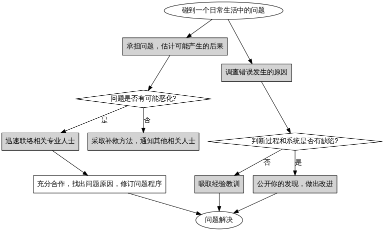

快速入门¶
TODO¶
- [o] [[东方闪电退教参考手册]]
- [o] [[咨询服务须知]]
- [o] [[义工服务须知]]
- [O] [[refs|参考资料]]
- [o] [[名人名言]]
- [] [[参考书籍]]
声明¶
- 目前本網站暫時不需要任何資金上的支持，一切諮詢皆免費支持，希望大家謹防以本網站名義對外的一切經濟事務。
- 请谨慎个人信息，以防邪教布局诈欺。慎重加入所谓反邪组织，防诈欺，防煽动，认真核查信息可靠性，信息来源，以防误导。
- 在个人经济允许的情况下，尽量找有资质的正规机构治疗咨询，可以最大程度的保障个人的合法权益，以免利益受损。如果受害者确实有明显精神异常，或精神方面的疾病，应该及时送入当地或正规的精神卫生中心治疗，以免延误病情造成更大的家庭悲剧。
- 网页在非ie浏览器（推荐采用chrome和firefox浏览器浏览本站）下会有更好显示效果，需要更多帮助请加入退教咨询QQ群: 81184027
- Item 1 initial text.
- Item 1a.
- Item 1b.
- Item 2a.
- Item 2b.
definition |(body elements)+ |
| paragraph |
| paragraph |
reStructuredText Markup Specification Author: David Goodger Contact: docutils-develop@lists.sourceforge.net Revision: 7629 Date: 2013-03-11 Copyright: This document has been placed in the public domain.
Note
This document is a detailed technical specification; it is not a tutorial or a primer. If this is your first exposure to reStructuredText, please read A ReStructuredText Primer and the Quick reStructuredText user reference first.
reStructuredText is plaintext that uses simple and intuitive constructs to indicate the structure of a document. These constructs are equally easy to read in raw and processed forms. This document is itself an example of reStructuredText (raw, if you are reading the text file, or processed, if you are reading an HTML document, for example). The reStructuredText parser is a component of Docutils.
Simple, implicit markup is used to indicate special constructs, such as section headings, bullet lists, and emphasis. The markup used is as minimal and unobtrusive as possible. Less often-used constructs and extensions to the basic reStructuredText syntax may have more elaborate or explicit markup.
reStructuredText is applicable to documents of any length, from the very small (such as inline program documentation fragments, e.g. Python docstrings) to the quite large (this document).
The first section gives a quick overview of the syntax of the reStructuredText markup by example. A complete specification is given in the Syntax Details section.
Literal blocks (in which no markup processing is done) are used for examples throughout this document, to illustrate the plaintext markup.
Contents
Quick Syntax Overview Syntax Details
- Whitespace
- Blank Lines Indentation
Escaping Mechanism Reference Names Document Structure
Document Sections Transitions
- Body Elements
Paragraphs Bullet Lists Enumerated Lists Definition Lists Field Lists
Bibliographic Fields RCS KeywordsOption Lists Literal Blocks
Indented Literal Blocks Quoted Literal BlocksLine Blocks Block Quotes Doctest Blocks Tables
Grid Tables Simple Tables
- Explicit Markup Blocks
- Footnotes
- Auto-Numbered Footnotes Auto-Symbol Footnotes Mixed Manual and Auto-Numbered Footnotes
Citations Hyperlink Targets
Anonymous HyperlinksDirectives Substitution Definitions Comments
Implicit Hyperlink Targets Inline Markup
Inline markup recognition rules Recognition order Character-Level Inline Markup Emphasis Strong Emphasis Interpreted Text Inline Literals Hyperlink References
Embedded URIs and AliasesInline Internal Targets Footnote References Citation References Substitution References Standalone Hyperlinks
- Units
- Length Units Percentage Units
Error Handling
Quick Syntax Overview
A reStructuredText document is made up of body or block-level elements, and may be structured into sections. Sections are indicated through title style (underlines & optional overlines). Sections contain body elements and/or subsections. Some body elements contain further elements, such as lists containing list items, which in turn may contain paragraphs and other body elements. Others, such as paragraphs, contain text and inline markup elements.
Here are examples of body elements:
Paragraphs (and inline markup):
Paragraphs contain text and may contain inline markup: emphasis, strong emphasis, interpreted text, inline literals, standalone hyperlinks (http://www.python.org), external hyperlinks (Python), internal cross-references (example), footnote references ([1]_), citation references ([CIT2002]), substitution references (|example|), and inline internal targets.
Paragraphs are separated by blank lines and are left-aligned.
Five types of lists:
Bullet lists:
- This is a bullet list.
- Bullets can be “*”, “+”, or “-”.
Enumerated lists:
- This is an enumerated list.
- Enumerators may be arabic numbers, letters, or roman numerals.
Definition lists:
- what
- Definition lists associate a term with a definition.
- how
- The term is a one-line phrase, and the definition is one or more paragraphs or body elements, indented relative to the term.
Field lists:
what: Field lists map field names to field bodies, like database records. They are often part of an extension syntax.
how: The field marker is a colon, the field name, and a colon.
The field body may contain one or more body elements, indented relative to the field marker.
Option lists, for listing command-line options:
-a command-line option “a” -b file options can have arguments and long descriptions --long options can be long also --input=file long options can also have arguments /V DOS/VMS-style options too There must be at least two spaces between the option and the description.
Literal blocks:
Literal blocks are either indented or line-prefix-quoted blocks, and indicated with a double-colon (”::”) at the end of the preceding paragraph (right here –>):
if literal_block: text = 'is left as-is' spaces_and_linebreaks = 'are preserved' markup_processing = NoneBlock quotes:
Block quotes consist of indented body elements:
This theory, that is mine, is mine.
—Anne Elk (Miss)
Doctest blocks:
>>> print 'Python-specific usage examples; begun with ">>>"' Python-specific usage examples; begun with ">>>" >>> print '(cut and pasted from interactive Python sessions)' (cut and pasted from interactive Python sessions)Two syntaxes for tables:
Grid tables; complete, but complex and verbose:
Header row, column 1 Header 2 Header 3 body row 1, column 1 column 2 column 3 body row 2 Cells may span Simple tables; easy and compact, but limited:
Header row, column 1 Header 2 Header 3 body row 1, column 1 column 2 column 3 body row 2 Cells may span columns Explicit markup blocks all begin with an explicit block marker, two periods and a space:
Footnotes:
[1] A footnote contains body elements, consistently indented by at least 3 spaces. Citations:
[CIT2002] Just like a footnote, except the label is textual. Hyperlink targets:
The “_example” target above points to this paragraph.
Directives:
Substitution definitions:
Comments:
Syntax Details
Descriptions below list “doctree elements” (document tree element names; XML DTD generic identifiers) corresponding to syntax constructs. For details on the hierarchy of elements, please see The Docutils Document Tree and the Docutils Generic DTD XML document type definition. Whitespace
Spaces are recommended for indentation, but tabs may also be used. Tabs will be converted to spaces. Tab stops are at every 8th column.
Other whitespace characters (form feeds [chr(12)] and vertical tabs [chr(11)]) are converted to single spaces before processing. Blank Lines
Blank lines are used to separate paragraphs and other elements. Multiple successive blank lines are equivalent to a single blank line, except within literal blocks (where all whitespace is preserved). Blank lines may be omitted when the markup makes element separation unambiguous, in conjunction with indentation. The first line of a document is treated as if it is preceded by a blank line, and the last line of a document is treated as if it is followed by a blank line. Indentation
Indentation is used to indicate – and is only significant in indicating – block quotes, definitions (in definition list items), and local nested content:
list item content (multi-line contents of list items, and multiple body elements within a list item, including nested lists), the content of literal blocks, and the content of explicit markup blocks.
Any text whose indentation is less than that of the current level (i.e., unindented text or “dedents”) ends the current level of indentation.
Since all indentation is significant, the level of indentation must be consistent. For example, indentation is the sole markup indicator for block quotes:
This is a top-level paragraph.
This paragraph belongs to a first-level block quote.
Paragraph 2 of the first-level block quote.
Multiple levels of indentation within a block quote will result in more complex structures:
This is a top-level paragraph.
This paragraph belongs to a first-level block quote.
This paragraph belongs to a second-level block quote.
Another top-level paragraph.
This paragraph belongs to a second-level block quote.This paragraph belongs to a first-level block quote. The second-level block quote above is inside this first-level block quote.
When a paragraph or other construct consists of more than one line of text, the lines must be left-aligned:
This is a paragraph. The lines of this paragraph are aligned at the left.
This paragraph has problems. The
- lines are not left-aligned. In addition
- to potential misinterpretation, warning
- and/or error messages will be generated
by the parser.
Several constructs begin with a marker, and the body of the construct must be indented relative to the marker. For constructs using simple markers (bullet lists, enumerated lists, footnotes, citations, hyperlink targets, directives, and comments), the level of indentation of the body is determined by the position of the first line of text, which begins on the same line as the marker. For example, bullet list bodies must be indented by at least two columns relative to the left edge of the bullet:
This is the first line of a bullet list item’s paragraph. All lines must align relative to the first line. [1]_
This indented paragraph is interpreted as a block quote.
Because it is not sufficiently indented, this paragraph does not belong to the list item.
| [1] | Here’s a footnote. The second line is aligned with the beginning of the footnote label. The ”..” marker is what determines the indentation. |
For constructs using complex markers (field lists and option lists), where the marker may contain arbitrary text, the indentation of the first line after the marker determines the left edge of the body. For example, field lists may have very long markers (containing the field names):
| Hello: | This field has a short field name, so aligning the field body with the first line is feasible. |
|---|---|
| Number-of-African-swallows-required-to-carry-a-coconut: | |
| It would be very difficult to align the field body with the left edge of the first line. It may even be preferable not to begin the body on the same line as the marker. | |
Escaping Mechanism
The character set universally available to plaintext documents, 7-bit ASCII, is limited. No matter what characters are used for markup, they will already have multiple meanings in written text. Therefore markup characters will sometimes appear in text without being intended as markup. Any serious markup system requires an escaping mechanism to override the default meaning of the characters used for the markup. In reStructuredText we use the backslash, commonly used as an escaping character in other domains.
A backslash followed by any character (except whitespace characters) escapes that character. The escaped character represents the character itself, and is prevented from playing a role in any markup interpretation. The backslash is removed from the output. A literal backslash is represented by two backslashes in a row (the first backslash “escapes” the second, preventing it being interpreted in an “escaping” role).
Backslash-escaped whitespace characters are removed from the document. This allows for character-level inline markup.
There are two contexts in which backslashes have no special meaning: literal blocks and inline literals. In these contexts, a single backslash represents a literal backslash, without having to double up.
Please note that the reStructuredText specification and parser do not address the issue of the representation or extraction of text input (how and in what form the text actually reaches the parser). Backslashes and other characters may serve a character-escaping purpose in certain contexts and must be dealt with appropriately. For example, Python uses backslashes in strings to escape certain characters, but not others. The simplest solution when backslashes appear in Python docstrings is to use raw docstrings:
r”“”This is a raw docstring. Backslashes () are not touched.”“”
Reference Names
Simple reference names are single words consisting of alphanumerics plus isolated (no two adjacent) internal hyphens, underscores, periods, colons and plus signs; no whitespace or other characters are allowed. Footnote labels (Footnotes & Footnote References), citation labels (Citations & Citation References), interpreted text roles, and some hyperlink references use the simple reference name syntax.
Reference names using punctuation or whose names are phrases (two or more space-separated words) are called “phrase-references”. Phrase-references are expressed by enclosing the phrase in backquotes and treating the backquoted text as a reference name:
Want to learn about my favorite programming language?
Simple reference names may also optionally use backquotes.
Reference names are whitespace-neutral and case-insensitive. When resolving reference names internally:
whitespace is normalized (one or more spaces, horizontal or vertical tabs, newlines, carriage returns, or form feeds, are interpreted as a single space), and case is normalized (all alphabetic characters are converted to lowercase).
For example, the following hyperlink references are equivalent:
Hyperlinks, footnotes, and citations all share the same namespace for reference names. The labels of citations (simple reference names) and manually-numbered footnotes (numbers) are entered into the same database as other hyperlink names. This means that a footnote (defined as ”.. [1]”) which can be referred to by a footnote reference ([1]_), can also be referred to by a plain hyperlink reference (1). Of course, each type of reference (hyperlink, footnote, citation) may be processed and rendered differently. Some care should be taken to avoid reference name conflicts. Document Structure Document
Doctree element: document.
The top-level element of a parsed reStructuredText document is the “document” element. After initial parsing, the document element is a simple container for a document fragment, consisting of body elements, transitions, and sections, but lacking a document title or other bibliographic elements. The code that calls the parser may choose to run one or more optional post-parse transforms, rearranging the document fragment into a complete document with a title and possibly other metadata elements (author, date, etc.; see Bibliographic Fields).
Specifically, there is no way to indicate a document title and subtitle explicitly in reStructuredText. Instead, a lone top-level section title (see Sections below) can be treated as the document title. Similarly, a lone second-level section title immediately after the “document title” can become the document subtitle. The rest of the sections are then lifted up a level or two. See the DocTitle transform for details. Sections
Doctree elements: section, title.
Sections are identified through their titles, which are marked up with adornment: “underlines” below the title text, or underlines and matching “overlines” above the title. An underline/overline is a single repeated punctuation character that begins in column 1 and forms a line extending at least as far as the right edge of the title text. Specifically, an underline/overline character may be any non-alphanumeric printable 7-bit ASCII character [1]. When an overline is used, the length and character used must match the underline. Underline-only adornment styles are distinct from overline-and-underline styles that use the same character. There may be any number of levels of section titles, although some output formats may have limits (HTML has 6 levels). [1]
The following are all valid section title adornment characters:
! ” # $ % & ‘ ( ) * + , - . / : ; < = > ? @ [ ] ^ _ ` { | } ~
Some characters are more suitable than others. The following are recommended:
= - ` : . ‘ ” ~ ^ _ * + #
Rather than imposing a fixed number and order of section title adornment styles, the order enforced will be the order as encountered. The first style encountered will be an outermost title (like HTML H1), the second style will be a subtitle, the third will be a subsubtitle, and so on.
Below are examples of section title styles:
Section Title¶
When a title has both an underline and an overline, the title text may be inset, as in the first two examples above. This is merely aesthetic and not significant. Underline-only title text may not be inset.
A blank line after a title is optional. All text blocks up to the next title of the same or higher level are included in a section (or subsection, etc.).
All section title styles need not be used, nor need any specific section title style be used. However, a document must be consistent in its use of section titles: once a hierarchy of title styles is established, sections must use that hierarchy.
Each section title automatically generates a hyperlink target pointing to the section. The text of the hyperlink target (the “reference name”) is the same as that of the section title. See Implicit Hyperlink Targets for a complete description.
Sections may contain body elements, transitions, and nested sections. Transitions
Doctree element: transition.
Instead of subheads, extra space or a type ornament between paragraphs may be used to mark text divisions or to signal changes in subject or emphasis.
(The Chicago Manual of Style, 14th edition, section 1.80)
Transitions are commonly seen in novels and short fiction, as a gap spanning one or more lines, with or without a type ornament such as a row of asterisks. Transitions separate other body elements. A transition should not begin or end a section or document, nor should two transitions be immediately adjacent.
The syntax for a transition marker is a horizontal line of 4 or more repeated punctuation characters. The syntax is the same as section title underlines without title text. Transition markers require blank lines before and after:
Para.
Para.
Unlike section title underlines, no hierarchy of transition markers is enforced, nor do differences in transition markers accomplish anything. It is recommended that a single consistent style be used.
The processing system is free to render transitions in output in any way it likes. For example, horizontal rules (<hr>) in HTML output would be an obvious choice. Body Elements Paragraphs
Doctree element: paragraph.
Paragraphs consist of blocks of left-aligned text with no markup indicating any other body element. Blank lines separate paragraphs from each other and from other body elements. Paragraphs may contain inline markup.
Syntax diagram:
| paragraph |
| paragraph |
Bullet Lists
Doctree elements: bullet_list, list_item.
A text block which begins with a “*”, “+”, “-”, “•”, “‣”, or “⁃”, followed by whitespace, is a bullet list item (a.k.a. “unordered” list item). List item bodies must be left-aligned and indented relative to the bullet; the text immediately after the bullet determines the indentation. For example:
This is the first bullet list item. The blank line above the first list item is required; blank lines between list items (such as below this paragraph) are optional.
This is the first paragraph in the second item in the list.
This is the second paragraph in the second item in the list. The blank line above this paragraph is required. The left edge of this paragraph lines up with the paragraph above, both indented relative to the bullet.
- This is a sublist. The bullet lines up with the left edge of the text blocks above. A sublist is a new list so requires a blank line above and below.
This is the third item of the main list.
This paragraph is not part of the list.
Here are examples of incorrectly formatted bullet lists:
- This first line is fine.
A blank line is required between list items and paragraphs. (Warning)
The following line appears to be a new sublist, but it is not: - This is a paragraph continuation, not a sublist (since there’s
no blank line). This line is also incorrectly indented.
- Warnings may be issued by the implementation.
Syntax diagram:
Enumerated Lists
Doctree elements: enumerated_list, list_item.
Enumerated lists (a.k.a. “ordered” lists) are similar to bullet lists, but use enumerators instead of bullets. An enumerator consists of an enumeration sequence member and formatting, followed by whitespace. The following enumeration sequences are recognized:
arabic numerals: 1, 2, 3, ... (no upper limit). uppercase alphabet characters: A, B, C, ..., Z. lower-case alphabet characters: a, b, c, ..., z. uppercase Roman numerals: I, II, III, IV, ..., MMMMCMXCIX (4999). lowercase Roman numerals: i, ii, iii, iv, ..., mmmmcmxcix (4999).
In addition, the auto-enumerator, “#”, may be used to automatically enumerate a list. Auto-enumerated lists may begin with explicit enumeration, which sets the sequence. Fully auto-enumerated lists use arabic numerals and begin with 1. (Auto-enumerated lists are new in Docutils 0.3.8.)
The following formatting types are recognized:
suffixed with a period: “1.”, “A.”, “a.”, “I.”, “i.”. surrounded by parentheses: “(1)”, “(A)”, “(a)”, “(I)”, “(i)”. suffixed with a right-parenthesis: “1)”, “A)”, “a)”, “I)”, “i)”.
While parsing an enumerated list, a new list will be started whenever:
An enumerator is encountered which does not have the same format and sequence type as the current list (e.g. “1.”, “(a)” produces two separate lists). The enumerators are not in sequence (e.g., “1.”, “3.” produces two separate lists).
It is recommended that the enumerator of the first list item be ordinal-1 (“1”, “A”, “a”, “I”, or “i”). Although other start-values will be recognized, they may not be supported by the output format. A level-1 [info] system message will be generated for any list beginning with a non-ordinal-1 enumerator.
Lists using Roman numerals must begin with “I”/”i” or a multi-character value, such as “II” or “XV”. Any other single-character Roman numeral (“V”, “X”, “L”, “C”, “D”, “M”) will be interpreted as a letter of the alphabet, not as a Roman numeral. Likewise, lists using letters of the alphabet may not begin with “I”/”i”, since these are recognized as Roman numeral 1.
The second line of each enumerated list item is checked for validity. This is to prevent ordinary paragraphs from being mistakenly interpreted as list items, when they happen to begin with text identical to enumerators. For example, this text is parsed as an ordinary paragraph:
A. Einstein was a really smart dude.
However, ambiguity cannot be avoided if the paragraph consists of only one line. This text is parsed as an enumerated list item:
- Einstein was a really smart dude.
If a single-line paragraph begins with text identical to an enumerator (“A.”, “1.”, “(b)”, “I)”, etc.), the first character will have to be escaped in order to have the line parsed as an ordinary paragraph:
A. Einstein was a really smart dude.
Examples of nested enumerated lists:
- Item 1 initial text.
- Item 1a.
- Item 1b.
- Item 2a.
- Item 2b.
Example syntax diagram:
Definition Lists
Doctree elements: definition_list, definition_list_item, term, classifier, definition.
Each definition list item contains a term, optional classifiers, and a definition. A term is a simple one-line word or phrase. Optional classifiers may follow the term on the same line, each after an inline ” : ” (space, colon, space). A definition is a block indented relative to the term, and may contain multiple paragraphs and other body elements. There may be no blank line between a term line and a definition block (this distinguishes definition lists from block quotes). Blank lines are required before the first and after the last definition list item, but are optional in-between. For example:
- term 1
- Definition 1.
- term 2
Definition 2, paragraph 1.
Definition 2, paragraph 2.
- term 3 : classifier
- Definition 3.
- term 4 : classifier one : classifier two
- Definition 4.
Inline markup is parsed in the term line before the classifier delimiter (” : ”) is recognized. The delimiter will only be recognized if it appears outside of any inline markup.
A definition list may be used in various ways, including:
As a dictionary or glossary. The term is the word itself, a classifier may be used to indicate the usage of the term (noun, verb, etc.), and the definition follows. To describe program variables. The term is the variable name, a classifier may be used to indicate the type of the variable (string, integer, etc.), and the definition describes the variable’s use in the program. This usage of definition lists supports the classifier syntax of Grouch, a system for describing and enforcing a Python object schema.
Syntax diagram:
definition |(body elements)+ |
Field Lists
Doctree elements: field_list, field, field_name, field_body.
Field lists are used as part of an extension syntax, such as options for directives, or database-like records meant for further processing. They may also be used for two-column table-like structures resembling database records (label & data pairs). Applications of reStructuredText may recognize field names and transform fields or field bodies in certain contexts. For examples, see Bibliographic Fields below, or the “image” and “meta” directives in reStructuredText Directives.
Field lists are mappings from field names to field bodies, modeled on RFC822 headers. A field name may consist of any characters, but colons (”:”) inside of field names must be escaped with a backslash. Inline markup is parsed in field names. Field names are case-insensitive when further processed or transformed. The field name, along with a single colon prefix and suffix, together form the field marker. The field marker is followed by whitespace and the field body. The field body may contain multiple body elements, indented relative to the field marker. The first line after the field name marker determines the indentation of the field body. For example:
| Date: | 2001-08-16 |
|---|---|
| Version: | 1 |
| Authors: |
|
| Indentation: | Since the field marker may be quite long, the second and subsequent lines of the field body do not have to line up with the first line, but they must be indented relative to the field name marker, and they must line up with each other. |
| Parameter i: | integer |
The interpretation of individual words in a multi-word field name is up to the application. The application may specify a syntax for the field name. For example, second and subsequent words may be treated as “arguments”, quoted phrases may be treated as a single argument, and direct support for the “name=value” syntax may be added.
Standard RFC822 headers cannot be used for this construct because they are ambiguous. A word followed by a colon at the beginning of a line is common in written text. However, in well-defined contexts such as when a field list invariably occurs at the beginning of a document (PEPs and email messages), standard RFC822 headers could be used.
Syntax diagram (simplified):
(body elements)+ |
Bibliographic Fields
Doctree elements: docinfo, author, authors, organization, contact, version, status, date, copyright, field, topic.
When a field list is the first non-comment element in a document (after the document title, if there is one), it may have its fields transformed to document bibliographic data. This bibliographic data corresponds to the front matter of a book, such as the title page and copyright page.
Certain registered field names (listed below) are recognized and transformed to the corresponding doctree elements, most becoming child elements of the “docinfo” element. No ordering is required of these fields, although they may be rearranged to fit the document structure, as noted. Unless otherwise indicated below, each of the bibliographic elements’ field bodies may contain a single paragraph only. Field bodies may be checked for RCS keywords and cleaned up. Any unrecognized fields will remain as generic fields in the docinfo element.
The registered bibliographic field names and their corresponding doctree elements are as follows:
Field name “Author”: author element. “Authors”: authors. “Organization”: organization. “Contact”: contact. “Address”: address. “Version”: version. “Status”: status. “Date”: date. “Copyright”: copyright. “Dedication”: topic. “Abstract”: topic.
The “Authors” field may contain either: a single paragraph consisting of a list of authors, separated by ”;” or ”,”; or a bullet list whose elements each contain a single paragraph per author. ”;” is checked first, so “Doe, Jane; Doe, John” will work. In some languages (e.g. Swedish), there is no singular/plural distinction between “Author” and “Authors”, so only an “Authors” field is provided, and a single name is interpreted as an “Author”. If a single name contains a comma, end it with a semicolon to disambiguate: ”:Authors: Doe, Jane;”.
The “Address” field is for a multi-line surface mailing address. Newlines and whitespace will be preserved.
The “Dedication” and “Abstract” fields may contain arbitrary body elements. Only one of each is allowed. They become topic elements with “Dedication” or “Abstract” titles (or language equivalents) immediately following the docinfo element.
This field-name-to-element mapping can be replaced for other languages. See the DocInfo transform implementation documentation for details.
Unregistered/generic fields may contain one or more paragraphs or arbitrary body elements. RCS Keywords
Bibliographic fields recognized by the parser are normally checked for RCS [2] keywords and cleaned up [3]. RCS keywords may be entered into source files as “$keyword$”, and once stored under RCS or CVS [4], they are expanded to “$keyword: expansion text $”. For example, a “Status” field will be transformed to a “status” element:
| Status: | $keyword: expansion text $ |
|---|
[2] Revision Control System. [3] RCS keyword processing can be turned off (unimplemented). [4] Concurrent Versions System. CVS uses the same keywords as RCS.
Processed, the “status” element’s text will become simply “expansion text”. The dollar sign delimiters and leading RCS keyword name are removed.
The RCS keyword processing only kicks in when the field list is in bibliographic context (first non-comment construct in the document, after a document title if there is one). Option Lists
Doctree elements: option_list, option_list_item, option_group, option, option_string, option_argument, description.
Option lists are two-column lists of command-line options and descriptions, documenting a program’s options. For example:
| -a | Output all. |
| -b | Output both (this description is quite long). |
| -c arg | Output just arg. |
| --long | Output all day long. |
| -p | This option has two paragraphs in the description. This is the first. This is the second. Blank lines may be omitted between options (as above) or left in (as here and below). |
| --very-long-option | |
| A VMS-style option. Note the adjustment for the required two spaces. | |
| --an-even-longer-option | |
| The description can also start on the next line. | |
| -2, --two | This option has two variants. |
| -f FILE, --file=FILE | |
| These two options are synonyms; both have arguments. | |
| /V | A VMS/DOS-style option. |
There are several types of options recognized by reStructuredText:
Short POSIX options consist of one dash and an option letter. Long POSIX options consist of two dashes and an option word; some systems use a single dash. Old GNU-style “plus” options consist of one plus and an option letter (“plus” options are deprecated now, their use discouraged). DOS/VMS options consist of a slash and an option letter or word.
Please note that both POSIX-style and DOS/VMS-style options may be used by DOS or Windows software. These and other variations are sometimes used mixed together. The names above have been chosen for convenience only.
The syntax for short and long POSIX options is based on the syntax supported by Python’s getopt.py module, which implements an option parser similar to the GNU libc getopt_long() function but with some restrictions. There are many variant option systems, and reStructuredText option lists do not support all of them.
Although long POSIX and DOS/VMS option words may be allowed to be truncated by the operating system or the application when used on the command line, reStructuredText option lists do not show or support this with any special syntax. The complete option word should be given, supported by notes about truncation if and when applicable.
Options may be followed by an argument placeholder, whose role and syntax should be explained in the description text. Either a space or an equals sign may be used as a delimiter between options and option argument placeholders; short options (“-” or “+” prefix only) may omit the delimiter. Option arguments may take one of two forms:
Begins with a letter ([a-zA-Z]) and subsequently consists of letters, numbers, underscores and hyphens ([a-zA-Z0-9_-]). Begins with an open-angle-bracket (<) and ends with a close-angle-bracket (>); any characters except angle brackets are allowed internally.
Multiple option “synonyms” may be listed, sharing a single description. They must be separated by comma-space.
There must be at least two spaces between the option(s) and the description. The description may contain multiple body elements. The first line after the option marker determines the indentation of the description. As with other types of lists, blank lines are required before the first option list item and after the last, but are optional between option entries.
Syntax diagram (simplified):
(body elements)+ |
Literal Blocks
Doctree element: literal_block.
A paragraph consisting of two colons (”::”) signifies that the following text block(s) comprise a literal block. The literal block must either be indented or quoted (see below). No markup processing is done within a literal block. It is left as-is, and is typically rendered in a monospaced typeface:
This is a typical paragraph. An indented literal block follows.
for a in [5,4,3,2,1]: # this is program code, shown as-is
print a
print "it's..."
# a literal block continues until the indentation ends
This text has returned to the indentation of the first paragraph, is outside of the literal block, and is therefore treated as an ordinary paragraph.
The paragraph containing only ”::” will be completely removed from the output; no empty paragraph will remain.
As a convenience, the ”::” is recognized at the end of any paragraph. If immediately preceded by whitespace, both colons will be removed from the output (this is the “partially minimized” form). When text immediately precedes the ”::”, one colon will be removed from the output, leaving only one colon visible (i.e., ”::” will be replaced by ”:”; this is the “fully minimized” form).
In other words, these are all equivalent (please pay attention to the colons after “Paragraph”):
Expanded form:
Paragraph:
Literal blockPartially minimized form:
Paragraph:
Literal blockFully minimized form:
Paragraph:
Literal block
All whitespace (including line breaks, but excluding minimum indentation for indented literal blocks) is preserved. Blank lines are required before and after a literal block, but these blank lines are not included as part of the literal block. Indented Literal Blocks
Indented literal blocks are indicated by indentation relative to the surrounding text (leading whitespace on each line). The minimum indentation will be removed from each line of an indented literal block. The literal block need not be contiguous; blank lines are allowed between sections of indented text. The literal block ends with the end of the indentation.
Syntax diagram:
| paragraph (ends with ”::”) |
indented literal block
Quoted Literal Blocks
Quoted literal blocks are unindented contiguous blocks of text where each line begins with the same non-alphanumeric printable 7-bit ASCII character [5]. A blank line ends a quoted literal block. The quoting characters are preserved in the processed document. [5]
The following are all valid quoting characters:
! ” # $ % & ‘ ( ) * + , - . / : ; < = > ? @ [ ] ^ _ ` { | } ~
Note that these are the same characters as are valid for title adornment of sections.
Possible uses include literate programming in Haskell and email quoting:
John Doe wrote:
>> Great idea!中国
>
> Why didn't I think of that?
You just did! ;-)
Syntax diagram:
| paragraph (ends with ”::”) |
| “>” per-line-quoted “>” contiguous literal block |
Line Blocks
Doctree elements: line_block, line. (New in Docutils 0.3.5.)
Line blocks are useful for address blocks, verse (poetry, song lyrics), and unadorned lists, where the structure of lines is significant. Line blocks are groups of lines beginning with vertical bar (“|”) prefixes. Each vertical bar prefix indicates a new line, so line breaks are preserved. Initial indents are also significant, resulting in a nested structure. Inline markup is supported. Continuation lines are wrapped portions of long lines; they begin with a space in place of the vertical bar. The left edge of a continuation line must be indented, but need not be aligned with the left edge of the text above it. A line block ends with a blank line.
This example illustrates continuation lines:
This example illustrates the nesting of line blocks, indicated by the initial indentation of new lines:
Take it away, Eric the Orchestra Leader!
A one, two, a one two three four 如果Half a bee, philosophically,must, ipso facto, half not be.But half the bee has got to be,vis a vis its entity. D’you see?But can a bee be said to beor not to be an entire bee,when half the bee is not a bee,due to some ancient injury?Singing...
Syntax diagram:
Block Quotes
Doctree element: block_quote, attribution.
A text block that is indented relative to the preceding text, without preceding markup indicating it to be a literal block or other content, is a block quote. All markup processing (for body elements and inline markup) continues within the block quote:
This is an ordinary paragraph, introducing a block quote.
“It is my business to know things. That is my trade.”
—Sherlock Holmes
A block quote may end with an attribution: a text block beginning with “–”, “—”, or a true em-dash, flush left within the block quote. If the attribution consists of multiple lines, the left edges of the second and subsequent lines must align.
Multiple block quotes may occur consecutively if terminated with attributions.
Unindented paragraph.
Block quote 1.
—Attribution 1
Block quote 2.
Empty comments may be used to explicitly terminate preceding constructs that would otherwise consume a block quote:
- List item.
Block quote 3.
Empty comments may also be used to separate block quotes:
Block quote 4.
Block quote 5.
Blank lines are required before and after a block quote, but these blank lines are not included as part of the block quote.
Syntax diagram:
| (current level of indentation) |
block quote (body elements)+
- – attribution text
- (optional)
Doctest Blocks
Doctree element: doctest_block.
Doctest blocks are interactive Python sessions cut-and-pasted into docstrings. They are meant to illustrate usage by example, and provide an elegant and powerful testing environment via the doctest module in the Python standard library.
Doctest blocks are text blocks which begin with “>>> ”, the Python interactive interpreter main prompt, and end with a blank line. Doctest blocks are treated as a special case of literal blocks, without requiring the literal block syntax. If both are present, the literal block syntax takes priority over Doctest block syntax:
This is an ordinary paragraph.
>>> print 'this is a Doctest block'
this is a Doctest block
The following is a literal block:
>>> This is not recognized as a doctest block by
reStructuredText. It *will* be recognized by the doctest 问题
module, though!
Indentation is not required for doctest blocks. Tables
Doctree elements: table, tgroup, colspec, thead, tbody, row, entry.
ReStructuredText provides two syntaxes for delineating table cells: Grid Tables and Simple Tables.
As with other body elements, blank lines are required before and after tables. Tables’ left edges should align with the left edge of preceding text blocks; if indented, the table is considered to be part of a block quote.
Once isolated, each table cell is treated as a miniature document; the top and bottom cell boundaries act as delimiting blank lines. Each cell contains zero or more body elements. Cell contents may include left and/or right margins, which are removed before processing. Grid Tables
Grid tables provide a complete table representation via grid-like “ASCII art”. Grid tables allow arbitrary cell contents (body elements), and both row and column spans. However, grid tables can be cumbersome to produce, especially for simple data sets. The Emacs table mode is a tool that allows easy editing of grid tables, in Emacs. See Simple Tables for a simpler (but limited) representation.
Grid tables are described with a visual grid made up of the characters “-”, “=”, “|”, and “+”. The hyphen (“-”) is used for horizontal lines (row separators). The equals sign (“=”) may be used to separate optional header rows from the table body (not supported by the Emacs table mode). The vertical bar (“|”) is used for vertical lines (column separators). The plus sign (“+”) is used for intersections of horizontal and vertical lines. Example:
| Header row, column 1 (header rows optional) | Header 2 | Header 3 | Header 4 |
|---|---|---|---|
| body row 1, column 1 | column 2 | column 3 | column 4 |
| body row 2 | Cells may span columns. | ||
| body row 3 | Cells may span rows. |
|
|
| body row 4 | |||
Some care must be taken with grid tables to avoid undesired interactions with cell text in rare cases. For example, the following table contains a cell in row 2 spanning from column 2 to column 4:
| row 1, col 1 | column 2 | column 3 | column 4 |
| row 2 | |||
| row 3 | |||
If a vertical bar is used in the text of that cell, it could have unintended effects if accidentally aligned with column boundaries:
| row 1, col 1 | column 2 | column 3 | column 4 |
| row 2 | Use the command ``ls | more``. | |
| row 3 | |||
Several solutions are possible. All that is needed is to break the continuity of the cell outline rectangle. One possibility is to shift the text by adding an extra space before:
| row 1, col 1 | column 2 | column 3 | column 4 |
| row 2 | Use the command ls | more. | ||
| row 3 | |||
Another possibility is to add an extra line to row 2:
| row 1, col 1 | column 2 | column 3 | column 4 |
| row 2 | Use the command ls | more. | ||
| row 3 | |||
Simple Tables
Simple tables provide a compact and easy to type but limited row-oriented table representation for simple data sets. Cell contents are typically single paragraphs, although arbitrary body elements may be represented in most cells. Simple tables allow multi-line rows (in all but the first column) and column spans, but not row spans. See Grid Tables above for a complete table representation.
Simple tables are described with horizontal borders made up of “=” and “-” characters. The equals sign (“=”) is used for top and bottom table borders, and to separate optional header rows from the table body. The hyphen (“-”) is used to indicate column spans in a single row by underlining the joined columns, and may optionally be used to explicitly and/or visually separate rows.
A simple table begins with a top border of equals signs with one or more spaces at each column boundary (two or more spaces recommended). Regardless of spans, the top border must fully describe all table columns. There must be at least two columns in the table (to differentiate it from section headers). The top border may be followed by header rows, and the last of the optional header rows is underlined with ‘=’, again with spaces at column boundaries. There may not be a blank line below the header row separator; it would be interpreted as the bottom border of the table. The bottom boundary of the table consists of ‘=’ underlines, also with spaces at column boundaries. For example, here is a truth table, a three-column table with one header row and four body rows:
| A | B | A and B |
|---|---|---|
| False | False | False |
| True | False | False |
| False | True | False |
| True | True | True |
Underlines of ‘-‘ may be used to indicate column spans by “filling in” column margins to join adjacent columns. Column span underlines must be complete (they must cover all columns) and align with established column boundaries. Text lines containing column span underlines may not contain any other text. A column span underline applies only to one row immediately above it. For example, here is a table with a column span in the header:
| Inputs | Output | |
|---|---|---|
| A | B | A or B |
| False | False | False |
| True | False | True |
| False | True | True |
| True | True | True |
Each line of text must contain spaces at column boundaries, except where cells have been joined by column spans. Each line of text starts a new row, except when there is a blank cell in the first column. In that case, that line of text is parsed as a continuation line. For this reason, cells in the first column of new rows (not continuation lines) must contain some text; blank cells would lead to a misinterpretation (but see the tip below). Also, this mechanism limits cells in the first column to only one line of text. Use grid tables if this limitation is unacceptable.
Tip
To start a new row in a simple table without text in the first column in the processed output, use one of these:
an empty comment (”..”), which may be omitted from the processed output (see Comments below) a backslash escape (“”) followed by a space (see Escaping Mechanism above)
Underlines of ‘-‘ may also be used to visually separate rows, even if there are no column spans. This is especially useful in long tables, where rows are many lines long.
Blank lines are permitted within simple tables. Their interpretation depends on the context. Blank lines between rows are ignored. Blank lines within multi-line rows may separate paragraphs or other body elements within cells.
The rightmost column is unbounded; text may continue past the edge of the table (as indicated by the table borders). However, it is recommended that borders be made long enough to contain the entire text.
The following example illustrates continuation lines (row 2 consists of two lines of text, and four lines for row 3), a blank line separating paragraphs (row 3, column 2), text extending past the right edge of the table, and a new row which will have no text in the first column in the processed output (row 4):
| col 1 | col 2 |
|---|---|
| 1 | Second column of row 1. |
| 2 | Second column of row 2. Second line of paragraph. |
| 3 |
|
| Row 4; column 1 will be empty. |
Explicit Markup Blocks
An explicit markup block is a text block:
whose first line begins with ”..” followed by whitespace (the “explicit markup start”), whose second and subsequent lines (if any) are indented relative to the first, and which ends before an unindented line.
Explicit markup blocks are analogous to bullet list items, with ”..” as the bullet. The text on the lines immediately after the explicit markup start determines the indentation of the block body. The maximum common indentation is always removed from the second and subsequent lines of the block body. Therefore if the first construct fits in one line, and the indentation of the first and second constructs should differ, the first construct should not begin on the same line as the explicit markup start.
Blank lines are required between explicit markup blocks and other elements, but are optional between explicit markup blocks where unambiguous.
The explicit markup syntax is used for footnotes, citations, hyperlink targets, directives, substitution definitions, and comments. Footnotes
Doctree elements: footnote, label.
Each footnote consists of an explicit markup start (”.. ”), a left square bracket, the footnote label, a right square bracket, and whitespace, followed by indented body elements. A footnote label can be:
a whole decimal number consisting of one or more digits, a single “#” (denoting auto-numbered footnotes), a “#” followed by a simple reference name (an autonumber label), or a single “*” (denoting auto-symbol footnotes).
The footnote content (body elements) must be consistently indented (by at least 3 spaces) and left-aligned. The first body element within a footnote may often begin on the same line as the footnote label. However, if the first element fits on one line and the indentation of the remaining elements differ, the first element must begin on the line after the footnote label. Otherwise, the difference in indentation will not be detected.
Footnotes may occur anywhere in the document, not only at the end. Where and how they appear in the processed output depends on the processing system.
Here is a manually numbered footnote:
| [1] | Body elements go here. |
Each footnote automatically generates a hyperlink target pointing to itself. The text of the hyperlink target name is the same as that of the footnote label. Auto-numbered footnotes generate a number as their footnote label and reference name. See Implicit Hyperlink Targets for a complete description of the mechanism.
Syntax diagram:
(body elements)+ |
Auto-Numbered Footnotes
A number sign (“#”) may be used as the first character of a footnote label to request automatic numbering of the footnote or footnote reference.
The first footnote to request automatic numbering is assigned the label “1”, the second is assigned the label “2”, and so on (assuming there are no manually numbered footnotes present; see Mixed Manual and Auto-Numbered Footnotes below). A footnote which has automatically received a label “1” generates an implicit hyperlink target with name “1”, just as if the label was explicitly specified.
A footnote may specify a label explicitly while at the same time requesting automatic numbering: [#label]. These labels are called autonumber labels. Autonumber labels do two things:
On the footnote itself, they generate a hyperlink target whose name is the autonumber label (doesn’t include the “#”).
They allow an automatically numbered footnote to be referred to more than once, as a footnote reference or hyperlink reference. For example:
If [3] is the first footnote reference, it will show up as “[1]”. We can refer to it again as [3] and again see “[1]”. We can also refer to it as note (an ordinary internal hyperlink reference).
[3] (1, 2) This is the footnote labeled “note”.
The numbering is determined by the order of the footnotes, not by the order of the references. For footnote references without autonumber labels ([4]), the footnotes and footnote references must be in the same relative order but need not alternate in lock-step. For example:
[5] is a reference to footnote 1, and [6] is a reference to footnote 2.
| [4] | This is footnote 1. |
| [5] | This is footnote 2. |
| [6] | This is footnote 3. |
[8] is a reference to footnote 3.
Special care must be taken if footnotes themselves contain auto-numbered footnote references, or if multiple references are made in close proximity. Footnotes and references are noted in the order they are encountered in the document, which is not necessarily the same as the order in which a person would read them. Auto-Symbol Footnotes
An asterisk (“*”) may be used for footnote labels to request automatic symbol generation for footnotes and footnote references. The asterisk may be the only character in the label. For example:
Here is a symbolic footnote reference: [*].
| [*] | This is the footnote. |
A transform will insert symbols as labels into corresponding footnotes and footnote references. The number of references must be equal to the number of footnotes. One symbol footnote cannot have multiple references.
The standard Docutils system uses the following symbols for footnote marks [6]:
asterisk/star (“*”) dagger (HTML character entity “†”, Unicode U+02020) double dagger (“‡”/U+02021) section mark (“§”/U+000A7) pilcrow or paragraph mark (“¶”/U+000B6) number sign (“#”) spade suit (“♠”/U+02660) heart suit (“♥”/U+02665) diamond suit (“♦”/U+02666) club suit (“♣”/U+02663)
[6] This list was inspired by the list of symbols for “Note Reference Marks” in The Chicago Manual of Style, 14th edition, section 12.51. “Parallels” (“||”) were given in CMoS instead of the pilcrow. The last four symbols (the card suits) were added arbitrarily.
If more than ten symbols are required, the same sequence will be reused, doubled and then tripled, and so on (“**” etc.).
Note
When using auto-symbol footnotes, the choice of output encoding is important. Many of the symbols used are not encodable in certain common text encodings such as Latin-1 (ISO 8859-1). The use of UTF-8 for the output encoding is recommended. An alternative for HTML and XML output is to use the “xmlcharrefreplace” output encoding error handler. Mixed Manual and Auto-Numbered Footnotes
Manual and automatic footnote numbering may both be used within a single document, although the results may not be expected. Manual numbering takes priority. Only unused footnote numbers are assigned to auto-numbered footnotes. The following example should be illustrative:
[2] will be “2” (manually numbered), [#]_ will be “3” (anonymous auto-numbered), and [7] will be “1” (labeled auto-numbered).
| [2] | This footnote is labeled manually, so its number is fixed. |
| [7] | This autonumber-labeled footnote will be labeled “1”. It is the first auto-numbered footnote and no other footnote with label “1” exists. The order of the footnotes is used to问题 determine numbering, not the order of the footnote references. |
| [8] | This footnote will be labeled “3”. It is the second auto-numbered footnote, but footnote label “2” is already used. |
Citations
Citations are identical to footnotes except that they use only non-numeric labels such as [note] or [GVR2001]. Citation labels are simple reference names (case-insensitive single words consisting of alphanumerics plus internal hyphens, underscores, and periods; no whitespace). Citations may be rendered separately and differently from footnotes. For example:
Here is a citation reference: [CIT2002].
| [CIT2002] | This is the citation. It’s just like a footnote,问题 except the label is textual. |
Hyperlink Targets
Doctree element: target.
These are also called explicit hyperlink targets, to differentiate them from implicit hyperlink targets defined below.
Hyperlink targets identify a location within or outside of a document, which may be linked to by hyperlink references.
Hyperlink targets may be named or anonymous. Named hyperlink targets consist of an explicit markup start (”.. ”), an underscore, the reference name (no trailing underscore), a colon, whitespace, and a link block:
Reference names are whitespace-neutral and case-insensitive. See Reference Names for details and examples.
Anonymous hyperlink targets consist of an explicit markup start (”.. ”), two underscores, a colon, whitespace, and a link block; there is no reference name:
An alternate syntax for anonymous hyperlinks consists of two underscores, a space, and a link block:
See Anonymous Hyperlinks below.
There are three types of hyperlink targets: internal, external, and indirect.
Internal hyperlink targets have empty link blocks. They provide an end point allowing a hyperlink to connect one place to another within a document. An internal hyperlink target points to the element following the target. For example:
Clicking on this internal hyperlink will take us to the target below.
The hyperlink target above points to this paragraph.
Internal hyperlink targets may be “chained”. Multiple adjacent internal hyperlink targets all point to the same element:
The targets “target1” and “target2” are synonyms; they both point to this paragraph.
If the element “pointed to” is an external hyperlink target (with a URI in its link block; see #2 below) the URI from the external hyperlink target is propagated to the internal hyperlink targets; they will all “point to” the same URI. There is no need to duplicate a URI. For example, all three of the following hyperlink targets refer to the same URI:
An inline form of internal hyperlink target is available; see Inline Internal Targets.
External hyperlink targets have an absolute or relative URI or email address in their link blocks. For example, take the following input:
See the Python home page for info.
Write to me with your questions.
After processing into HTML, the hyperlinks might be expressed as:
See the <a href=”http://www.python.org“>Python</a> home page for info.
<a href=”mailto:jdoe@example.com“>Write to me</a> with your questions.
An external hyperlink’s URI may begin on the same line as the explicit markup start and target name, or it may begin in an indented text block immediately following, with no intervening blank lines. If there are multiple lines in the link block, they are concatenated. Any whitespace is removed (whitespace is permitted to allow for line wrapping). The following external hyperlink targets are equivalent:
If an external hyperlink target’s URI contains an underscore as its last character, it must be escaped to avoid being mistaken for an indirect hyperlink target:
This link refers to a file called underscore_.
It is possible (although not generally recommended) to include URIs directly within hyperlink references. See Embedded URIs and Aliases below.
Indirect hyperlink targets have a hyperlink reference in their link blocks. In the following example, target “one” indirectly references whatever target “two” references, and target “two” references target “three”, an internal hyperlink target. In effect, all three reference the same thing:
Just as with hyperlink references anywhere else in a document, if a phrase-reference is used in the link block it must be enclosed in backquotes. As with external hyperlink targets, the link block of an indirect hyperlink target may begin on the same line as the explicit markup start or the next line. It may also be split over multiple lines, in which case the lines are joined with whitespace before being normalized.
For example, the following indirect hyperlink targets are equivalent:
It is possible to include an alias directly within hyperlink references. See Embedded URIs and Aliases below.
If the reference name contains any colons, either:
the phrase must be enclosed in backquotes:
or the colon(s) must be backslash-escaped in the link target:
It’s not easy being green...
See Implicit Hyperlink Targets below for the resolution of duplicate reference names.
Syntax diagram:
Anonymous Hyperlinks
The World Wide Web Consortium recommends in its HTML Techniques for Web Content Accessibility Guidelines that authors should “clearly identify the target of each link.” Hyperlink references should be as verbose as possible, but duplicating a verbose hyperlink name in the target is onerous and error-prone. Anonymous hyperlinks are designed to allow convenient verbose hyperlink references, and are analogous to Auto-Numbered Footnotes. They are particularly useful in short or one-off documents. However, this feature is easily abused and can result in unreadable plaintext and/or unmaintainable documents. Caution is advised.
Anonymous hyperlink references are specified with two underscores instead of one:
See `the web site of my favorite programming language`__.
Anonymous targets begin with ”.. __:”; no reference name is required or allowed:
As a convenient alternative, anonymous targets may begin with “__” only:
The reference name of the reference is not used to match the reference to its target. Instead, the order of anonymous hyperlink references and targets within the document is significant: the first anonymous reference will link to the first anonymous target. The number of anonymous hyperlink references in a document must match the number of anonymous targets. For readability, it is recommended that targets be kept close to references. Take care when editing text containing anonymous references; adding, removing, and rearranging references require attention to the order of corresponding targets. Directives
Doctree elements: depend on the directive.
Directives are an extension mechanism for reStructuredText, a way of adding support for new constructs without adding new primary syntax (directives may support additional syntax locally). All standard directives (those implemented and registered in the reference reStructuredText parser) are described in the reStructuredText Directives document, and are always available. Any other directives are domain-specific, and may require special action to make them available when processing the document.
For example, here’s how an image may be placed:
A figure (a graphic with a caption) may placed like this:
The larch.（问题）
An admonition (note, caution, etc.) contains other body elements:
Note
This is a paragraph
- Here is a bullet list.
Directives are indicated by an explicit markup start (”.. ”) followed by the directive type, two colons, and whitespace (together called the “directive marker”). Directive types are case-insensitive single words (alphanumerics plus isolated internal hyphens, underscores, plus signs, colons, and periods; no whitespace). Two colons are used after the directive type for these reasons:
Two colons are distinctive, and unlikely to be used in common text.
Two colons avoids clashes with common comment text like:
If an implementation of reStructuredText does not recognize a directive (i.e., the directive-handler is not installed), a level-3 (error) system message is generated, and the entire directive block (including the directive itself) will be included as a literal block. Thus ”::” is a natural choice.
The directive block is consists of any text on the first line of the directive after the directive marker, and any subsequent indented text. The interpretation of the directive block is up to the directive code. There are three logical parts to the directive block:
Directive arguments. Directive options. Directive content.
Individual directives can employ any combination of these parts. Directive arguments can be filesystem paths, URLs, title text, etc. Directive options are indicated using field lists; the field names and contents are directive-specific. Arguments and options must form a contiguous block beginning on the first or second line of the directive; a blank line indicates the beginning of the directive content block. If either arguments and/or options are employed by the directive, a blank line must separate them from the directive content. The “figure” directive employs all three parts:
Simple directives may not require any content. If a directive that does not employ a content block is followed by indented text anyway, it is an error. If a block quote should immediately follow a directive, use an empty comment in-between (see Comments below).
Actions taken in response to directives and the interpretation of text in the directive content block or subsequent text block(s) are directive-dependent. See reStructuredText Directives for details.
Directives are meant for the arbitrary processing of their contents, which can be transformed into something possibly unrelated to the original text. It may also be possible for directives to be used as pragmas, to modify the behavior of the parser, such as to experiment with alternate syntax. There is no parser support for this functionality at present; if a reasonable need for pragma directives is found, they may be supported.
Directives do not generate “directive” elements; they are a parser construct only, and have no intrinsic meaning outside of reStructuredText. Instead, the parser will transform recognized directives into (possibly specialized) document elements. Unknown directives will trigger level-3 (error) system messages.
Syntax diagram:
Substitution Definitions
Doctree element: substitution_definition.
Substitution definitions are indicated by an explicit markup start (”.. ”) followed by a vertical bar, the substitution text, another vertical bar, whitespace, and the definition block. Substitution text may not begin or end with whitespace. A substitution definition block contains an embedded inline-compatible directive (without the leading ”.. ”), such as “image” or “replace”. For example:
The symbol must be used on containers used to dispose of medical waste.
It is an error for a substitution definition block to directly or indirectly contain a circular substitution reference.
Substitution references are replaced in-line by the processed contents of the corresponding definition (linked by matching substitution text). Matches are case-sensitive but forgiving; if no exact match is found, a case-insensitive comparison is attempted.
Substitution definitions allow the power and flexibility of block-level directives to be shared by inline text. They are a way to include arbitrarily complex inline structures within text, while keeping the details out of the flow of text. They are the equivalent of SGML/XML’s named entities or programming language macros.
Without the substitution mechanism, every time someone wants an application-specific new inline structure, they would have to petition for a syntax change. In combination with existing directive syntax, any inline structure can be coded without new syntax (except possibly a new directive).
Syntax diagram:
Following are some use cases for the substitution mechanism. Please note that most of the embedded directives shown are examples only and have not been implemented.
Objects
Substitution references may be used to associate ambiguous text with a unique object identifier.
For example, many sites may wish to implement an inline “user” directive:
|Michael| and |Jon| are our widget-wranglers.
Depending on the needs of the site, this may be used to index the document for later searching, to hyperlink the inline text in various ways (mailto, homepage, mouseover Javascript with profile and contact information, etc.), or to customize presentation of the text (include username in the inline text, include an icon image with a link next to the text, make the text bold or a different color, etc.).
The same approach can be used in documents which frequently refer to a particular type of objects with unique identifiers but ambiguous common names. Movies, albums, books, photos, court cases, and laws are possible. For example:
|The Transparent Society| offers a fascinating alternate view on privacy issues.
Classes or functions, in contexts where the module or class names are unclear and/or interpreted text cannot be used, are another possibility:
4XSLT has the convenience method , so you don’t have to mess with DOM objects if all you want is the transformed output.
- module=xml.xslt class=Processor
Images
Images are a common use for substitution references:
West led the 3, covered by dummy’s Q, East’s K, and trumped in hand with the 2.
means stop.
means go.
means go really fast.
The “image” directive has been implemented.
{kind=link}
Styles [7]
Substitution references may be used to associate inline text with an externally defined presentation style:
Even |the text in Texas| is big.
The style name may be meaningful in the context of some particular output format (CSS class name for HTML output, LaTeX style name for LaTeX, etc), or may be ignored for other output formats (such as plaintext). [7] There may be sufficient need for a “style” mechanism to warrant simpler syntax such as an extension to the interpreted text role syntax. The substitution mechanism is cumbersome for simple text styling.
Templates
Inline markup may be used for later processing by a template engine. For example, a Zope author might write:
Welcome back, |name|!
After processing, this ZPT output would result:
Welcome back, <span tal:replace=”user/getUserName”>name</span>!
Zope would then transform this to something like “Welcome back, David!” during a session with an actual user.
Replacement text
The substitution mechanism may be used for simple macro substitution. This may be appropriate when the replacement text is repeated many times throughout one or more documents, especially if it may need to change later. A short example is unavoidably contrived:
reStructuredText is a little annoying to type over and over, especially when writing about reStructuredText itself, and spelling out the bicapitalized word reStructuredText every time isn’t really necessary for reStructuredText source readability.
Note the trailing underscore in the first use of a substitution reference. This indicates a reference to the corresponding hyperlink target.
Substitution is also appropriate when the replacement text cannot be represented using other inline constructs, or is obtrusively long:
But still, that’s nothing compared to a name like |j2ee-cas|__.
The “replace” directive has been implemented.
Comments
Doctree element: comment.
Arbitrary indented text may follow the explicit markup start and will be processed as a comment element. No further processing is done on the comment block text; a comment contains a single “text blob”. Depending on the output formatter, comments may be removed from the processed output. The only restriction on comments is that they not use the same syntax as any of the other explicit markup constructs: substitution definitions, directives, footnotes, citations, or hyperlink targets. To ensure that none of the other explicit markup constructs is recognized, leave the ”..” on a line by itself:
An explicit markup start followed by a blank line and nothing else (apart from whitespace) is an “empty comment”. It serves to terminate a preceding construct, and does not consume any indented text following. To have a block quote follow a list or any indented construct, insert an unindented empty comment in-between.
Syntax diagram:
Implicit Hyperlink Targets
Implicit hyperlink targets are generated by section titles, footnotes, and citations, and may also be generated by extension constructs. Implicit hyperlink targets otherwise behave identically to explicit hyperlink targets.
Problems of ambiguity due to conflicting duplicate implicit and explicit reference names are avoided by following this procedure:
Explicit hyperlink targets override any implicit targets having the same reference name. The implicit hyperlink targets are removed, and level-1 (info) system messages are inserted. Duplicate implicit hyperlink targets are removed, and level-1 (info) system messages inserted. For example, if two or more sections have the same title (such as “Introduction” subsections of a rigidly-structured document), there will be duplicate implicit hyperlink targets. Duplicate explicit hyperlink targets are removed, and level-2 (warning) system messages are inserted. Exception: duplicate external hyperlink targets (identical hyperlink names and referenced URIs) do not conflict, and are not removed.
System messages are inserted where target links have been removed. See “Error Handling” in PEP 258.
The parser must return a set of unique hyperlink targets. The calling software (such as the Docutils) can warn of unresolvable links, giving reasons for the messages. Inline Markup
In reStructuredText, inline markup applies to words or phrases within a text block. The same whitespace and punctuation that serves to delimit words in written text is used to delimit the inline markup syntax constructs. The text within inline markup may not begin or end with whitespace. Arbitrary character-level inline markup is supported although not encouraged. Inline markup cannot be nested.
There are nine inline markup constructs. Five of the constructs use identical start-strings and end-strings to indicate the markup:
emphasis: “*” strong emphasis: “**” interpreted text: “`” inline literals: “``” substitution references: “|”
Three constructs use different start-strings and end-strings:
inline internal targets: “_`” and “`” footnote references: “[” and “]_” hyperlink references: “`” and “`_” (phrases), or just a trailing “_” (single words)
Standalone hyperlinks are recognized implicitly, and use no extra markup. Inline markup recognition rules
Inline markup start-strings and end-strings are only recognized if all of the following conditions are met:
- Inline markup start-strings must start a text block or be immediately preceded by
- whitespace, one of the ASCII characters - : / ‘ ” < ( [ { or a non-ASCII punctuation character with Unicode category Pd (Dash), Po (Other), Ps (Open), Pi (Initial quote), or Pf (Final quote) [8].
Inline markup start-strings must be immediately followed by non-whitespace. Inline markup end-strings must be immediately preceded by non-whitespace. Inline markup end-strings must end a text block or be immediately followed by
whitespace, one of the ASCII characters - . , : ; ! ? / ‘ ” ) ] } > or a non-ASCII punctuation character with Unicode category Pd (Dash), Po (Other), Pe (Close), Pf (Final quote), or Pi (Initial quote) [8].If an inline markup start-string is immediately preceded by one of the ASCII characters ‘ ” < ( [ {, or a character with Unicode character category Ps, Pi, or Pf, it must not be followed by the corresponding [9] closing character from ‘ ” ) ] } > or the categories Pe, Pf, or Pi. An inline markup end-string must be separated by at least one character from the start-string. An unescaped backslash preceding a start-string or end-string will disable markup recognition, except for the end-string of inline literals. See Escaping Mechanism above for details.
[8] (1, 2) Pi (Punctuation, Initial quote) characters are “usually closing, sometimes opening”. Pf (Punctuation, Final quote) characters are “usually closing, sometimes opening”. [9] For quotes, corresponding characters can be any of the quotation marks in international usage
The inline markup recognition rules were devised to allow 90% of non-markup uses of “*”, “`”, “_”, and “|” without escaping. For example, none of the following terms are recognized as containing inline markup strings:
2*x a**b O(N**2) e**(x*y) f(x)*f(y) a|b file*.* (breaks 1) 2 * x a ** b (* BOM32_* ` `` _ __ | (breaks 2) “*” ‘|’ (*) [*] {*} <*> ‘*’ ‚*‘ ‘*‚ ’*’ ‚*’ “*” „*“ “*„ ”*” „*” »*« ›*‹ «*» »*» ›*› (breaks 5) || (breaks 6) __init__ __init__()
No escaping is required inside the following inline markup examples:
It may be desirable to use inline literals for some of these anyhow, especially if they represent code snippets. It’s a judgment call.
These cases do require either literal-quoting or escaping to avoid misinterpretation:
In most use cases, inline literals or literal blocks are the best choice (by default, this also selects a monospaced font):
*4, class_, *args, **kwargs, `TeX-quoted’, *ML, *.txt
Recognition order
Inline markup delimiter characters are used for multiple constructs, so to avoid ambiguity there must be a specific recognition order for each character. The inline markup recognition order is as follows:
Asterisks: Strong emphasis (“**”) is recognized before emphasis (“*”). Backquotes: Inline literals (“``”), inline internal targets (leading “_`”, trailing “`”), are mutually independent, and are recognized before phrase hyperlink references (leading “`”, trailing “_”) and interpreted text (“”). Trailing underscores: Footnote references (“[” + label + “]_”) and simple hyperlink references (name + trailing “_”) are mutually independent. Vertical bars: Substitution references (“|”) are independently recognized. Standalone hyperlinks are the last to be recognized.
Character-Level Inline Markup
It is possible to mark up individual characters within a word with backslash escapes (see Escaping Mechanism above). Backslash escapes can be used to allow arbitrary text to immediately follow inline markup:
Python lists use square bracket syntax.
The backslash will disappear from the processed document. The word “list” will appear as inline literal text, and the letter “s” will immediately follow it as normal text, with no space in-between.
Arbitrary text may immediately precede inline markup using backslash-escaped whitespace:
Possible in reStructuredText, though not encouraged.
The backslashes and spaces separating “re”, “Structured”, and “Text” above will disappear from the processed document.
Caution!
The use of backslash-escapes for character-level inline markup is not encouraged. Such use is ugly and detrimental to the unprocessed document’s readability. Please use this feature sparingly and only where absolutely necessary. Emphasis
Doctree element: emphasis.
Start-string = end-string = “*”.
Text enclosed by single asterisk characters is emphasized:
This is emphasized text.
Emphasized text is typically displayed in italics. Strong Emphasis
Doctree element: strong.
Start-string = end-string = “**”.
Text enclosed by double-asterisks is emphasized strongly:
This is strong text.
Strongly emphasized text is typically displayed in boldface. Interpreted Text
Doctree element: depends on the explicit or implicit role and processing.
Start-string = end-string = “`”.
Interpreted text is text that is meant to be related, indexed, linked, summarized, or otherwise processed, but the text itself is typically left alone. Interpreted text is enclosed by single backquote characters:
This is interpreted text.
The “role” of the interpreted text determines how the text is interpreted. The role may be inferred implicitly (as above; the “default role” is used) or indicated explicitly, using a role marker. A role marker consists of a colon, the role name, and another colon. A role name is a single word consisting of alphanumerics plus isolated internal hyphens, underscores, plus signs, colons, and periods; no whitespace or other characters are allowed. A role marker is either a prefix or a suffix to the interpreted text, whichever reads better; it’s up to the author:
Interpreted text allows extensions to the available inline descriptive markup constructs. To emphasis, strong emphasis, inline literals, and hyperlink references, we can add “title reference”, “index entry”, “acronym”, “class”, “red”, “blinking” or anything else we want. Only pre-determined roles are recognized; unknown roles will generate errors. A core set of standard roles is implemented in the reference parser; see reStructuredText Interpreted Text Roles for individual descriptions. The role directive can be used to define custom interpreted text roles. In addition, applications may support specialized roles. Inline Literals
Doctree element: literal.
Start-string = end-string = “``”.
Text enclosed by double-backquotes is treated as inline literals:
This text is an example of inline literals.
Inline literals may contain any characters except two adjacent backquotes in an end-string context (according to the recognition rules above). No markup interpretation (including backslash-escape interpretation) is done within inline literals.
Line breaks are not preserved in inline literals. Although a reStructuredText parser will preserve runs of spaces in its output, the final representation of the processed document is dependent on the output formatter, thus the preservation of whitespace cannot be guaranteed. If the preservation of line breaks and/or other whitespace is important, literal blocks should be used.
Inline literals are useful for short code snippets. For example:
The regular expression [+-]?(\d+(\.\d*)?|\.\d+) matches floating-point numbers (without exponents).
Hyperlink References
Doctree element: reference.
Hyperlink references are indicated by a trailing underscore, “_”, except for standalone hyperlinks which are recognized independently. The underscore can be thought of as a right-pointing arrow. The trailing underscores point away from hyperlink references, and the leading underscores point toward hyperlink targets.
Hyperlinks consist of two parts. In the text body, there is a source link, a reference name with a trailing underscore (or two underscores for anonymous hyperlinks):
See the Python home page for info.
A target link with a matching reference name must exist somewhere else in the document. See Hyperlink Targets for a full description).
Anonymous hyperlinks (which see) do not use reference names to match references to targets, but otherwise behave similarly to named hyperlinks. Embedded URIs and Aliases
A hyperlink reference may directly embed a target URI or (since Docutils 0.11) a hyperlink reference within angle brackets (“<...>”) as follows:
See the Python home page for info.
This link is an alias to the link above.
This is exactly equivalent to:
See the Python home page for info.
This link is an alias to the link above.
The bracketed URI must be preceded by whitespace and be the last text before the end string.
With a single trailing underscore, the reference is named and the same target URI may be referred to again. With two trailing underscores, the reference and target are both anonymous, and the target cannot be referred to again. These are “one-off” hyperlinks. For example:
RFC 2396 and RFC 2732 together define the syntax of URIs.
Equivalent to:
`RFC 2396`__ and `RFC 2732`__ together define the syntax of URIs.
Standalone hyperlinks are treated as URIs, even if they end with an underscore like in the example of a Python function documentation:
If a target URI that is not recognized as standalone hyperlink happens to end with an underscore, this needs to be backslash-escaped to avoid being parsed as hyperlink reference. For example
Use the source.
creates an anonymous reference to the file parrots.txt_.
If the reference text happens to end with angle-bracketed text that is not a URI or hyperlink reference, at least one angle-bracket needs to be backslash-escaped or an escaped space should follow. For example, here are three references to titles describing a tag:
See `HTML Element: \<a>`_, `HTML Element: <b\> `_, and `HTML Element: <c>\ `_.
The reference text may also be omitted, in which case the URI will be duplicated for use as the reference text. This is useful for relative URIs where the address or file name is also the desired reference text:
See a_named_relative_link or an_anonymous_relative_link for details.
Caution!
This construct offers easy authoring and maintenance of hyperlinks at the expense of general readability. Inline URIs, especially long ones, inevitably interrupt the natural flow of text. For documents meant to be read in source form, the use of independent block-level hyperlink targets is strongly recommended. The embedded URI construct is most suited to documents intended only to be read in processed form. Inline Internal Targets
Doctree element: target.
Start-string = “_`”, end-string = “`”.
Inline internal targets are the equivalent of explicit internal hyperlink targets, but may appear within running text. The syntax begins with an underscore and a backquote, is followed by a hyperlink name or phrase, and ends with a backquote. Inline internal targets may not be anonymous.
For example, the following paragraph contains a hyperlink target named “Norwegian Blue”:
Oh yes, the Norwegian Blue. What’s, um, what’s wrong with it?
See Implicit Hyperlink Targets for the resolution of duplicate reference names. Footnote References
Doctree element: footnote_reference.
Start-string = “[”, end-string = “]_”.
Each footnote reference consists of a square-bracketed label followed by a trailing underscore. Footnote labels are one of:
one or more digits (i.e., a number), a single “#” (denoting auto-numbered footnotes), a “#” followed by a simple reference name (an autonumber label), or a single “*” (denoting auto-symbol footnotes).
For example:
Please RTFM [1]_.
| [1] | Read The Fine Manual 墙外 |
Citation References
Doctree element: citation_reference.
Start-string = “[”, end-string = “]_”.
Each citation reference consists of a square-bracketed label followed by a trailing underscore. Citation labels are simple reference names (case-insensitive single words, consisting of alphanumerics plus internal hyphens, underscores, and periods; no whitespace).
For example:
Here is a citation reference: [CIT2002].
See Citations for the citation itself. Substitution References
Doctree element: substitution_reference, reference.
Start-string = “|”, end-string = “|” (optionally followed by “_” or “__”).
Vertical bars are used to bracket the substitution reference text. A substitution reference may also be a hyperlink reference by appending a “_” (named) or “__” (anonymous) suffix; the substitution text is used for the reference text in the named case.
The processing system replaces substitution references with the processed contents of the corresponding substitution definitions (which see for the definition of “correspond”). Substitution definitions produce inline-compatible elements.
Examples:
This is a simple |substitution reference|. It will be replaced by the processing system.
This is a combination |substitution and hyperlink reference|_. In addition to being replaced, the replacement text or element will refer to the “substitution and hyperlink reference” target.
Standalone Hyperlinks
Doctree element: reference.
Start-string = end-string = “” (empty string).
A URI (absolute URI [10] or standalone email address) within a text block is treated as a general external hyperlink with the URI itself as the link’s text. For example:
See http://www.python.org for info.
would be marked up in HTML as:
See <a href=”http://www.python.org“>http://www.python.org</a> for info.
Two forms of URI are recognized:
Absolute URIs. These consist of a scheme, a colon (”:”), and a scheme-specific part whose interpretation depends on the scheme.
The scheme is the name of the protocol, such as “http”, “ftp”, “mailto”, or “telnet”. The scheme consists of an initial letter, followed by letters, numbers, and/or “+”, “-”, ”.”. Recognition is limited to known schemes, per the Official IANA Registry of URI Schemes and the W3C’s Retired Index of WWW Addressing Schemes.
The scheme-specific part of the resource identifier may be either hierarchical or opaque:
Hierarchical identifiers begin with one or two slashes and may use slashes to separate hierarchical components of the path. Examples are web pages and FTP sites:
ftp://ftp.python.org/pub/python
Opaque identifiers do not begin with slashes. Examples are email addresses and newsgroups:
With queries, fragments, and %-escape sequences, URIs can become quite complicated. A reStructuredText parser must be able to recognize any absolute URI, as defined in RFC2396 and RFC2732.
Standalone email addresses, which are treated as if they were absolute URIs with a “mailto:” scheme. Example:
Punctuation at the end of a URI is not considered part of the URI, unless the URI is terminated by a closing angle bracket (“>”). Backslashes may be used in URIs to escape markup characters, specifically asterisks (“*”) and underscores (“_”) which are vaid URI characters (see Escaping Mechanism above). [10] Uniform Resource Identifier. URIs are a general form of URLs (Uniform Resource Locators). For the syntax of URIs see RFC2396 and RFC2732. Units
(New in Docutils 0.3.10.)
All measures consist of a positive floating point number in standard (non-scientific) notation and a unit, possibly separated by one or more spaces.
Units are only supported where explicitly mentioned in the reference manuals. Length Units
The following length units are supported by the reStructuredText parser:
em (ems, the height of the element’s font) ex (x-height, the height of the letter “x”) px (pixels, relative to the canvas resolution) in (inches; 1in=2.54cm) cm (centimeters; 1cm=10mm) mm (millimeters) pt (points; 1pt=1/72in) pc (picas; 1pc=12pt)
This set corresponds to the length units in CSS.
(List and explanations taken from http://www.htmlhelp.com/reference/css/units.html#length.)
The following are all valid length values: “1.5em”, “20 mm”, ”.5in”.
Length values without unit are completed with a writer-dependent default (e.g. px with html4css1, pt with latex2e). See the writer specific documentation in the user doc for details. Percentage Units
Percentage values have a percent sign (“%”) as unit. Percentage values are relative to other values, depending on the context in which they occur. Error Handling
Doctree element: system_message, problematic.
Markup errors are handled according to the specification in PEP 258. View document source. Generated on: 2013-03-22 08:22 UTC. Generated by Docutils from reStructuredText source.